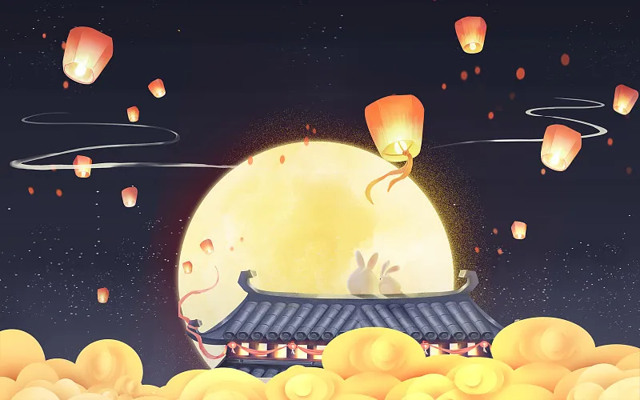

下元节
———水官解厄佑平安
历史脉络
下元节起源于东汉道教"三元"信仰体系，与上元、中元并称"三官节"。《道藏》记载："十月十五日，水官解厄，江河祭祀"。宋代《东京梦华录》详细描述了汴京百姓"设斋供佛，焚纸船"的盛况。明清时期，江南地区发展出独特的"水官诞"祭祀仪式，苏州博物馆藏有明代水官画像，其服饰纹样融合了道教符箓与民间吉祥图案。近代以来，这一节日逐渐式微，但在福建、台湾等沿海地区仍有传承。
核心习俗：
水官祭祀：
泉州渔民保留"海醮"传统，木质祭坛需按北斗七星方位摆放供品；
消灾祈福：
江西龙虎山道观举行"解厄法会"，信众将写有心愿的黄帛投入丹炉；
放灯仪式：
四川阆中古城制作"孔明灯"需用竹篾36根，象征三十六天罡；
食俗文化：
北方"豆泥骨朵"选用五种豆类，暗合五行相生之理。
文化内涵
下元节体现了道教"天人感应"的哲学思想，台北故宫藏清代《水陆道场图》中，可见道士手持法器镇守江河的场景。在当代环保理念下，广西侗族将传统祭水仪式改良为"护河行动"，青少年用可降解材料制作祭品，既传承文化又保护生态。日本长崎的"精灵流"仪式，仍保留着放船形灯笼的唐宋遗风。
现代转型
2023年数字文旅项目"元宇宙水官祭"上线，用户可通过VR参与虚拟法会；浙江大学团队研发的"智能河灯"内置水质传感器，在祈福同时监测水体环境。非遗保护机构正在整理《水官科仪》古籍，计划以沉浸式戏剧形式重现明代斋醮场景。
